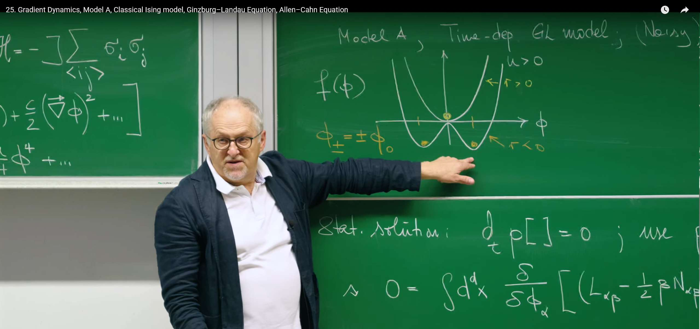

引言：迈向动态的演化过程——弛豫动力学¶
在前面的课程中，Erwin Frey 教授通过昂萨格理论 (Onsager's Theory) 和动态涨落-耗散定理 (Dynamic Fluctuation-Dissipation Theorem)，为我们建立了一套宏伟且普适的理论框架，它利用对称性和热力学基本原理，为任何接近平衡的系统所必须遵循的涨落和耗散规律构建了统一的物理图景。我们描绘了一幅静态的自由能景观 (free energy landscape) 图：系统会稳定地处于景观的“山谷”之中。
然而，一个根本性的问题依然悬而未决：如果系统最初并不在自由能的最低点，它如何到达那里？系统是沿着怎样的路径、以多快的速率“滑向”平衡态的？
这节课将运用上一讲建立的普适原则，从静态的平衡态描述，迈向动态的演化过程。我们将探索系统是如何在自由能的驱动下，随着时间推移，逐渐演化至平衡的。这个过程被称为弛豫 (relaxation)。
为了实现这个目标，我们将构建描述弛豫过程的最简洁、最基础的动力学模型。根据核心物理量——序参量 (order parameter)——是否守恒，这类模型被分为两种：
模型A (Model A)：描述非守恒 (non-conserved) 序参量的动力学，这是这节课的焦点。
模型B (Model B)：描述守恒 (conserved) 序参量的动力学，将在下一节课探讨。
Erwin Frey 教授将介绍，如何从几个普适的物理原则出发，构建出一个强大的理论方程——含时金兹堡-朗道方程 (Time-Dependent Ginzburg-Landau Equation)。它不仅能描述系统沿着自由能梯度确定性的“下滑”，还能将温度带来的永不停歇的随机“踢动”也囊括其中。我们将看到，如何从几个普适的物理原则出发，构建出一个强大的理论，这个模型将成为我们理解更复杂的非平衡现象的基石，尤其适用于描述连续相变临界点附近的动力学行为。

1. 理论基础——梯度动力学与金兹堡-朗道框架¶
在正式构建描述系统“如何”弛豫的动力学方程之前，我们首先需要一个强大的工具来描绘系统“是什么”，即系统在平衡态附近的静态属性。这个工具，就是凝聚态物理和统计力学中的基石性理论——金兹堡-朗道理论 (Ginzburg-Landau Theory)。
该理论由苏联物理学家维塔利·金兹堡和列夫·朗道于1950年为描述超导现象而提出（这项成就最终帮助他们赢得了诺贝尔物理学奖），但其思想的普适性远超于此。金兹堡-朗道理论的本质，是一种研究相变的唯象理论。它的核心思想极为优雅：在连续相变点附近，系统的宏观状态可以由一个变化缓慢的序参量场来描述，而系统的总自由能可以根据对称性原则，展开成这个序参量及其梯度的幂级数。
这种“不问微观细节，只抓宏观对称性”的方法取得了巨大的成功，被广泛应用于描述铁磁体、液晶、超流、甚至宇宙学中的相变过程。
1.1 回顾指导原则：“半唯象”方法¶
在构建任何动力学理论之前，我们需要明确指导思想。正如Frey教授在讲座开头所回顾的，我们将采用一种“半唯象 (semiphenomenological)”方法。这种方法并非从微观第一性原理出发进行推导，而是巧妙地利用物理学中最根本的普适原则，作为三大“铁律”来约束我们理论的数学形式。
约束一：局域热平衡 (Local Thermal Equilibrium)： 这是整个框架的基石。我们假设系统在宏观上虽然尚未平衡，但在每个足够小的时空区域内，已经达到了局部的热力学平衡。这一假设的威力在于，它允许我们使用平衡态热力学的强大理论——特别是自由能 (Free Energy)——来描述系统的局域状态。这使得我们可以定义一个依赖于空间位置的局域自由能密度。
约束二：细致平衡与昂萨格关系 (Detailed Balance and Onsager Relations)：细致平衡是平衡态的一个强有力特征，它要求任何微观过程与其逆过程的速率相等。在接近平衡的线性响应区域，这一原则体现为昂萨格倒易关系 (Onsager reciprocity relations)。如果我们用一组广义流 \(J_a\) 和广义力 \(X_b\) 来描述系统的弛豫过程，它们之间的线性关系由动力学系数矩阵 \(L_{ab}\) （即昂萨格系数）给出：\(J_a = \sum_b L_{ab} X_b\)。昂萨格关系指出，在没有磁场的情况下，这个矩阵是对称的，即 \(L_{ab} = L_{ba}\)。这是微观可逆性在宏观动力学方程上的深刻体现，为我们的模型提供了强有力的约束。
约束三：对称性与守恒律 (Symmetries and Conservation Laws)：这是物理学中最根本的法则。我们构建的任何动力学方程都必须“尊重”系统内禀的对称性。例如，对于经典的伊辛模型 (Ising model)，其能量在所有自旋反向（\(\phi \to -\phi\)）的变换下保持不变，我们的理论必须反映这一点。同样，守恒律至关重要，一个物理量（序参量）是否守恒，将直接决定其动力学方程的形式，这也是区分模型A（非守恒）和模型B（守恒）的核心所在。
这种半唯象方法的强大之处在于，它使我们能够用一个统一的理论框架来描述一大类在临界点附近行为普适的物理系统（例如磁铁、液-气相变、二元合金等），而无需纠缠于每个系统错综复杂的微观细节。我们利用普适原则确定方程的形式，而方程中具体的参数（如动力学系数）则留给实验来确定。
1.2 金兹堡-朗道自由能泛函：描绘可能性的景观¶
遵循指导原则一，描述系统（等温）平衡态的核心物理量是金兹堡-朗道 (Ginzburg-Landau, GL) 自由能泛函 \(F[\phi]\)。它是一个以序参量 (order parameter) 场 \(\phi(\mathbf{x})\) 为变量的“函数的函数”。序参量是一个粗粒化的物理量，用于衡量系统的有序程度，例如，在磁性系统中，\(\phi(\mathbf{x})\) 可以代表在 \(\mathbf{x}\) 点附近的平均磁化强度。
现在，我们运用指导原则三（对称性），来构建这个泛函的具体形式。对于一个各向同性的系统，其自由能泛函最一般的形式可以写成对整个空间积分的形式：
这个泛函由两部分关键贡献构成：
1. 局域势能 \(f(\phi)\) 与自发对称性破缺¶

第一项 \(f(\phi)\) 是局域自由能密度 (local free energy density)，它只依赖于该点的序参量值 \(\phi\)。为了满足伊辛模型的 \(\phi \to -\phi\) 对称性，对 \(f(\phi)\) 的泰勒展开式中必须只包含\(\phi\)的偶次项。取到最关键的四次项，我们得到：
这里的参数具有深刻的物理意义：
- \(u > 0\)：这个参数必须为正，以保证当 \(\phi\) 很大时自由能有下界，从而确保系统的热力学稳定性。
- \(r\)：这是最关键的控制参数。它通常与温度 \(T\) 离临界温度 \(T_c\) 的距离成正比，即 \(r \propto (T-T_c)\)。\(r\) 的符号决定了自由能景观的形状，从而决定了系统的宏观相态：
- 当 \(r > 0\) (高温区, \(T > T_c\))：此时 \(f(\phi)\) 的图像是一个单阱势，唯一的最小值点在 \(\phi = 0\)。这意味着系统最稳定的状态是无序相，例如顺磁相，宏观平均磁化为零。
- 当 \(r < 0\) (低温区, \(T < T_c\))：此时 \(\phi^2\) 项的系数为负，使得 \(f(\phi)\) 在 \(\phi = 0\) 处变成一个局域极大值点。\(f(\phi)\) 的形状变为一个"墨西哥帽"或"双阱势"，其最小值点出现在 \(\phi_0 = \pm \sqrt{-r/u}\)。系统为了降低自由能，必须自发地选择其中一个极小值点，导致宏观上出现非零的序参量（例如，\(\phi_0\) 或 \(-\phi_0\) 的自发磁化）。这个过程就是著名的自发对称性破缺 (spontaneous symmetry breaking)。系统原本的 \(\phi \to -\phi\) 对称性在哈密顿量（或自由能）中依然存在，但在系统的基态中被破坏了。
自发对称性破缺 (spontaneous symmetry breaking) 的物理本质在于，一个物理系统所遵循的基本定律或哈密顿量本身是高度对称的，但系统为了寻求能量最低的基态（或真空态），却自发地选择了一个破坏这种对称性的特定状态。这个过程可以形象地比作一个“墨西哥帽”：帽子本身是完美的轴对称，但一个小球为了稳定，必须从帽子顶端滚落到帽檐的某一个具体位置，这个选择就破坏了原有的轴对称性。这一思想起源于凝聚态物理（例如解释铁磁性），后在20世纪60年代被南部阳一郎等人开创性地引入粒子物理学，并最终成为现代物理学的基石。此外，它还被用于解释超导、晶体形成以及宇宙早期的相变等深刻的物理现象。
2. 梯度能量项 \(\frac{c}{2}(\nabla \phi)^2\)¶
第二项是梯度能量项。为了满足空间的平移和旋转对称性，这一项必须由梯度的标量形式构成，最低阶非零项就是 \((\nabla \phi)^2\)。它的物理来源是，在空间中产生序参量的不均匀分布需要付出能量代价。例如，在磁性系统中，形成一个“自旋向上”区域和一个“自旋向下”区域之间的畴壁 (domain wall) 是需要消耗能量的。系数 \(c > 0\) 衡量了序参量的“刚度 (stiffness)”，\(c\) 越大，形成不均匀结构的能量代价就越高，系统就越倾向于保持均匀。
\((\nabla \phi)^2\) 这个形式是来自对称性的“铁律”对于一个均匀的系统（比如一块纯铁），物理规律不应该因为我们平移或旋转了坐标系而改变。自由能作为一个描述系统整体性质的标量，也必须满足这个要求：
- 平移不变性：自由能只能依赖于序参量的变化，而不能依赖于绝对的空间坐标\(\vec{x}\)。
- 旋转不变性：自由能必须是一个标量，不能有方向。
我们能用来描述空间变化的“积木”就是序参量的梯度 \(\nabla \phi\)。然而，\(\nabla \phi\) 本身是一个矢量，它有方向。如果我们直接把它放进自由能，就会破坏旋转不变性。那么，如何用一个矢量构造出最简单的标量呢？答案就是将它与自身做点乘：\((\nabla \phi) \cdot (\nabla \phi) = (\nabla \phi)^2\)。这就是满足对称性要求的、最低阶的非零梯度项。
教授提到的伊辛模型 (Ising model)，其能量由哈密顿量 \(\mathcal{H} = -J \sum_{\langle ij \rangle} \sigma_i \sigma_j\) 描述。
- 完美有序：在一个全都是“自旋向上”的区域，所有相邻自旋对 \((\sigma_i, \sigma_j)\) 的乘积都是 \((+1)(+1)=1\)，对能量的贡献是 \(-J\)。这是能量最低的状态。
- 畴壁 (Domain Wall)：现在想象一条线，线的左边全是“自旋向上”，右边全是“自旋向下”。在这条线上，会有很多相邻的自旋对是“上”和“下”挨在一起的。这时，它们的乘积是 \((+1)(-1)=-1\)，对能量的贡献变成了\(+J\)。
- 从微观到宏观：每一对“反向”的相邻自旋，都使得系统的能量比完美有序时更高。一个快速变化的空间分布（即大的 \(\nabla \phi\)），就对应着在微观层面存在着大量的这种“反向”邻居。因此，梯度能量项 \((\nabla \phi)^2\) 正是这种微观相互作用能量代价在宏观连续场论中的体现。
系数 \(c\) 衡量了系统抵抗空间变化的“意愿”。你可以把它想象成一块布料的挺括程度：
- \(c\) 很大：像一块硬质帆布。它极力想保持平整（\(\phi\) 均匀），形成一个褶皱（畴壁）需要耗费很大的能量。因此，在这种系统中，形成的“磁畴”会非常大，畴壁也会很宽、很平滑。
- \(c\) 很小：像一块柔软的丝绸。它可以轻易地形成各种复杂的褶皱图案（\(\phi\) 剧烈变化）。在这种系统中，磁畴可以很小，畴壁也可以很窄、很尖锐。
所以，这个梯度能量项不仅是数学上满足对称性的需要，它更是微观相互作用在宏观尺度上的物理体现。
省略的项是什么？¶
值得说明的是，\(F[\phi]\)公式中的省略号 "..." 代表了我们在这个唯象理论中忽略掉的所有更高阶的项。
金兹堡-朗道理论的本质是一个在序参量 \(\phi\) 及其梯度 \(\nabla \phi\) 都很小的情况下进行的泰勒展开。我们只保留了对描述相变现象最重要、最低阶的几项。省略号代表的项包括：
- 更高次的序参量项：如 \(\phi^6\), \(\phi^8\) 等。
- 更高次的梯度项：如 \((\nabla \phi)^4\), \((\nabla^2 \phi)^2\) (这代表了“弯曲”能量) 等。
- 混合项：如 \(\phi^2 (\nabla \phi)^2\) 等。
为什么可以心安理得地忽略它们呢？这背后是金兹堡-朗道理论的核心适用范围：连续相变（或称二阶相变）的临界点附近。
- 在临界点附近，序参量 \(\phi\) 的值本身就是无穷小的。因此，\(\phi^6\) 项会比 \(\phi^4\) 项小得多得多，可以忽略不计。
- 我们还假设序参量在空间上是缓慢变化的。这意味着梯度 \(\nabla \phi\) 也很小。因此，更高阶的梯度项，如 \((\nabla \phi)^4\)，也远小于 \((\nabla \phi)^2\) 项，同样可以忽略。
总而言之，我们保留的 \(f(\phi) = \frac{r}{2}\phi^2 + \frac{u}{4}\phi^4\) 和 \(\frac{c}{2}(\nabla \phi)^2\) 是抓住相变物理本质的最简化、最相关的项。省略号提醒我们，这是一个近似理论，但正因为这个巧妙的近似，我们才能构建出一个普适且可解的模型，成功描述一大类不同物理系统的临界行为。
表1：金兹堡-朗道参数物理意义汇总
| 符号 | 名称 | 物理意义/作用 |
|---|---|---|
| \(\phi(x)\) | 序参量场 | 衡量系统在空间点 \(x\) 的局域有序程度，如局域磁化强度。 |
| \(F[\phi]\) | GL自由能泛函 | 系统的总自由能，是序参量场的函数。其最小值对应系统的平衡态。 |
| \(f(\phi)\) | 局域自由能密度 | 自由能中不依赖于空间变化的部分，其形状决定了系统的相态。 |
| \(r\) | 温度参数 | 控制相变的关键参数，通常 \(r \propto (T - T_c)\)。\(r > 0\) 对应无序相, \(r < 0\) 对应有序相。 |
| \(u\) | 稳定性参数 | 保证系统稳定性的四次项系数，必须为正。 |
| \(c\) | 刚度系数 | 梯度能量项的系数，惩罚序参量的空间不均匀性，与畴壁能量相关。 |
| \(T_c\) | 临界温度 | 发生连续相变的温度点，对应 \(r = 0\)。 |
代码实现1：可视化自由能景观¶
为了更直观地理解自发对称性破缺，我们可以使用Python来绘制局域自由能密度 \(f(\phi)\) 的图像。下面的代码展示了在 \(r > 0\) 和 \(r < 0\) 两种情况下 \(f(\phi)\) 的不同形态。
import numpy as np
import matplotlib.pyplot as plt
# Set matplotlib to support Chinese display
plt.rcParams['font.sans-serif'] = ['SimHei', 'FangSong', 'Microsoft YaHei'] # Specify default font
plt.rcParams['axes.unicode_minus'] = False # Solve the problem that the minus sign '-' is displayed as a square when saving the image
def gld_potential(phi, r, u):
"""
Calculate the Ginzburg-Landau local free energy density f(φ).
Parameters:
phi (np.ndarray): Order parameter values
r (float): Temperature parameter
u (float): Stability parameter
Returns:
np.ndarray: Free energy density f(φ)
"""
return 0.5 * r * phi**2 + 0.25 * u * phi**4
# Define parameters
u = 1.0 # Stability parameter, kept positive
phi_range_3d = np.linspace(-2.5, 2.5, 100)
# Create a 3D figure with dark background
fig = plt.figure(figsize=(14, 10), facecolor='black')
ax = fig.add_subplot(111, projection='3d')
ax.xaxis.pane.fill = True
ax.yaxis.pane.fill = True
ax.zaxis.pane.fill = True
ax.xaxis.pane.set_color('black')
ax.yaxis.pane.set_color('black')
ax.zaxis.pane.set_color('black')
ax.xaxis.pane.set_edgecolor('white')
ax.yaxis.pane.set_edgecolor('white')
ax.zaxis.pane.set_edgecolor('white')
ax.tick_params(axis='x', colors='white')
ax.tick_params(axis='y', colors='white')
ax.tick_params(axis='z', colors='white')
# Set title and axis labels with detailed information
ax.set_title('3D Ginzburg-Landau Free Energy Landscape $f(\\phi, r)$\nHigh Temperature (r > 0) → Low Temperature (r < 0)',
color='white', fontsize=14, pad=20)
ax.set_xlabel('Order Parameter $\\phi$\n(-2.5 to 2.5)', color='white', labelpad=10)
ax.set_ylabel('Parameter $r$\n(Positive: T > T$_c$ | Negative: T < T$_c$)', color='white', labelpad=10)
ax.set_zlabel('Free Energy Density $f(\\phi, r)$', color='white', labelpad=10)
# Create two separate surfaces for r > 0 and r < 0 cases
# r > 0 (High temperature, disordered phase)
r_range_positive = np.linspace(0.1, 2.0, 50)
Phi_3d_pos, R_3d_pos = np.meshgrid(phi_range_3d[::2], r_range_positive)
F_3d_positive = 0.5 * R_3d_pos * Phi_3d_pos**2 + 0.25 * u * Phi_3d_pos**4
# r < 0 (Low temperature, ordered phase)
r_range_negative = np.linspace(-2.0, -0.1, 50)
Phi_3d_neg, R_3d_neg = np.meshgrid(phi_range_3d[::2], r_range_negative)
F_3d_negative = 0.5 * R_3d_neg * Phi_3d_neg**2 + 0.25 * u * Phi_3d_neg**4
# Plot both surfaces
surf1 = ax.plot_surface(Phi_3d_pos, R_3d_pos, F_3d_positive, cmap='viridis', alpha=0.8, label='r > 0 (T > T_c) - Disordered Phase')
surf2 = ax.plot_surface(Phi_3d_neg, R_3d_neg, F_3d_negative, cmap='plasma', alpha=0.8, label='r < 0 (T < T_c) - Ordered Phase')
# Add annotations for key features
# For r > 0 case: single minimum at phi = 0
ax.plot([0], [1.0], [0], 'ro', markersize=10)
ax.text(0.8, 1.5, 0.4, 'Unique minimum\n$\\phi = 0$\n(Disordered Phase)', color='white', fontsize=10,
bbox=dict(boxstyle="round,pad=0.3", facecolor='black', edgecolor='white'))
# Add critical point indicator
ax.plot([0], [0], [0], 'wo', markersize=8)
ax.text(0.9, 0.6, 0.8, 'Critical Point\nr = 0\nPhase Transition',
color='white', fontsize=9,
bbox=dict(boxstyle="round,pad=0.3", facecolor='black', edgecolor='yellow'))
# For r < 0 case: degenerate minima at phi = ±√(-r/u)
phi_min_pos = np.sqrt(-(-1.0) / u) # For r = -1.0
phi_min_neg = -phi_min_pos
f_min = 0.5 * (-1.0) * phi_min_pos**2 + 0.25 * u * phi_min_pos**4
ax.plot([phi_min_pos, phi_min_neg], [-1.0, -1.0], [f_min, f_min], 'co', markersize=10)
ax.text(phi_min_pos+0.5, -1.5, f_min+0.5, 'Degenerate minima\n$\\phi = \\pm\\sqrt{-r/u}$\n(Ordered Phase)',
color='white', fontsize=10, bbox=dict(boxstyle="round,pad=0.3", facecolor='black', edgecolor='white'))
plt.tight_layout()
plt.show()

三个维度： 该图的三个坐标轴分别代表了序参量 \(\phi\)（系统的有序程度）、控制参数（ \(r\)与温度相关）以及自由能密度 \(f(\phi, r)\)。整个彩色曲面就是系统的“自由能地貌”，在任何给定的温度（即给定的\(r\)值）下，系统总是会向着能量最低的“山谷”演化。
-
高温无序区 (\(r > 0\))：绿色-黄色曲面，对应于高温区。我们可以看到，对于任何一个 \(r>0\) 的切片，自由能地貌都呈现为一个单阱势，其唯一的最低点（红色圆点标注）始终位于 \(\phi = 0\)。这代表了系统的无序相 (disordered phase)，宏观上没有净序参量产生。
-
低温有序区 (\(r < 0\))：紫色-蓝色曲面，对应于低温区。当\(r\)穿过0点变为负值后，景观的拓扑结构发生了根本性的改变：中心点 \(\phi = 0\) 从一个稳定的“山谷”隆起为一个不稳定的“山峰”，而在其两侧则对称地出现了两个新的、能量更低的“山谷”（青色圆点标注）。这代表了系统的有序相 (ordered phase)。
-
相变与自发对称性破缺：临界点 \(r = 0\) 标志着相变 (phase transition) 的临界状态。当系统处于低温区 (\(r < 0\)) 时，它必须从两个能量完全相同的“山谷”（\(\phi = \pm\sqrt{-r/u}\)）中选择一个来安身。一旦做出选择（比如系统落入了右侧的山谷），系统的状态就不再是左右对称的了，尽管支配它的物理定律（即整个自由能地貌）依然是完美对称的。这就是自发对称性破缺 (spontaneous symmetry breaking) 。
2. 模型A——弛豫的运动方程¶
有了描述系统状态的自由能景观，我们现在可以构建描述系统如何在这片景观上"运动"的动力学方程了。模型A 描述的是最简单的一种情况：一个非守恒序参量的弛豫动力学。
非守恒意味着系统中序参量的总积分值 \(\int \phi(\mathbf{x}, t) d^d x\) 不是一个必须保持不变的量（例如，总磁化强度可以在外场作用下改变）。这背后的微观机制是，系统的序参量可以与外部的“热库”进行交换。在铁磁体中，单个原子的自旋翻转，其角动量是与晶格的振动（声子）进行交换的，因此总磁化强度并非孤立系统的守恒量。这与下一节课要讨论的模型B形成鲜明对比，后者描述的守恒场（如二元合金中的粒子浓度）不能凭空产生或消失，只能在系统内部重新分布。
2.1. 非守恒场的朗之万方程¶
模型A的动力学由一个朗之万方程 (Langevin equation) 描述，这是本讲的核心方程：
这个方程并非凭空写出，它正是我们在上一讲建立的昂萨格理论框架的直接应用。回忆一下，上一讲我们得到，热力学“流”\(J_a\) 与“力”\(\mu_b\) 之间存在线性关系 \(J_a = L_{ab} \mu_b\)。在这里：
流 (Flux) \(J_\alpha\) 就是序参量随时间的变化率 \(\frac{\partial \phi_\alpha}{\partial t}\)。
力 (Force) \(\mu_\beta\) 是与序参量 \(\phi_\beta\) 共轭的热力学力。对于等温系统，它正比于自由能的负泛函导数，即 \(\mu_\beta \propto -\frac{\delta F}{\delta \phi_\beta}\)。
因此，这个方程的确定性部分，本质上就是昂萨格线性关系 \(J = L \mu\) 在连续场论中的具体体现。
我们可以将这个方程分解为两个部分来理解：
确定性项： \(-L \frac{\delta F}{\delta \phi}\)
-
这一项描述了系统在自由能景观驱动下的确定性演化，体现了梯度动力学 (gradient dynamics) 的核心思想。这意味着系统的演化路径没有任何“惯性”，其“速度”(\(\partial_t \phi\))在任意时刻都直接正比于当前位置的“坡度”(\(-\delta F/\delta \phi\))。这是一种典型的过阻尼动力学，与我们在第18讲中学习的斯摩棱霍夫斯基方程 (Smoluchowski Equation) 思想一致。
-
\(\frac{\delta F}{\delta \phi}\) 是自由能泛函 \(F\) 对场 \(\phi\) 的泛函导数。在物理上，它扮演着驱动系统演化的热力学力或化学势 \(\mu\) 的角色。如果在场的某个位置 \(\mathbf{x}\) 处对 \(\phi\) 做一个微小的扰动，总自由能 \(F\) 会因此发生多大的变化。它衡量了自由能景观在无穷维函数空间中的“局部坡度”。
-
方程中的负号表示，系统序参量的变化方向与自由能的梯度方向相反。换句话说，系统总是朝着使自由能下降最快的方向演化，就像一个滚珠在山坡上会沿着最陡峭的路径滚下一样。
-
\(L_{\alpha\beta}\) 是昂萨格动力学系数矩阵，它是一个正定矩阵，描述了系统的迁移率 (mobility) 。它决定了在相同的热力学力驱动下，序参量弛豫的快慢，即设定了系统演化的时间尺度。
随机项： \(\xi(\mathbf{x}, t)\)
-
这一项代表了来自热库的热噪声 (thermal noise)。它的物理起源是，系统（由粗粒化的序参量 \(\phi\) 描述）时刻在与构成热库的大量微观自由度（如原子振动、分子碰撞）进行着能量交换。这些微观相互作用在宏观尺度上表现为对序参量的随机"踢动"。
-
这个噪声项通常被建模为高斯白噪声 (Gaussian white noise)，其统计性质由以下两式定义：
-
均值为零：\(\langle \xi_\alpha(\mathbf{x}, t) \rangle = 0\)。这意味着噪声的随机踢动在平均意义上没有偏向任何特定方向。
-
时空 delta 关联：\(\langle \xi_\alpha(\mathbf{x}, t) \xi_\beta(\mathbf{x}', t') \rangle = N_{\alpha\beta} \delta_{\alpha\beta} \delta(\mathbf{x} - \mathbf{x}') \delta(t-t')\)。这表示在不同时间或不同空间点的噪声是完全不相关的。\(N_{\alpha\beta}\) 是一个常数矩阵，决定了噪声的强度。空间上的 \(\delta(\mathbf{x} - \mathbf{x}')\) 关联是一个理想化假设，其物理前提是产生噪声的微观过程（如分子碰撞）的关联尺度远小于我们关心的序参量 \(\phi\) 的变化尺度。
2.2. 时间之箭：自由能作为李雅普诺夫函数¶
我们的动力学方程是否正确地描述了系统趋向平衡的过程？我们可以通过考察总自由能 \(F\) 随时间的变化率来验证这一点。在不考虑噪声项的确定性情况下，我们有：
由于昂萨格系数矩阵 \(L\) 是正定的，上式括号中的二次型 \((\cdot)L(\cdot)\) 总是非负的。因此，我们得到了一个至关重要的结论：
这个结果表明，在模型A的动力学演化中，系统的总自由能永不增加，只会单调下降，直到达到自由能的最小值点（此时热力学力 \(\frac{\delta F}{\delta \phi} = 0\)，演化停止）。在动力系统理论中，满足这种性质的函数被称为李雅普诺夫函数 (Lyapunov function)。
这不仅仅是一个数学上的优美性质，它有着深刻的物理内涵。对于一个孤立系统，热力学第二定律表现为熵永不减少（\(dS/dt \ge 0\)）。而对于我们研究的这种与恒温热库接触的等温系统，第二定律的等价表述就是其自由能永不增加（\(dF/dt \le 0\)）。因此，证明自由能是一个李雅普诺夫函数，就是用动力学的语言严格证明了我们的模型方程内禀地满足热力学第二定律。它为我们的动力学方程嵌入了不可逆的"时间之箭"，数学上保证了系统总是朝向平衡态演化，而不是远离它。
李雅普诺夫函数由俄国天才数学家、物理学家亚历山大·李雅普诺夫 (Aleksandr Lyapunov) 在其1892年的博士论文 General Problem of the Stability Of Motion 中开创性地提出。在李雅普诺夫之前，判断一个非线性系统是否稳定，通常需要尝试去求解其复杂的微分方程，这在绝大多数情况下是不可能的。李雅普诺夫的天才之处在于，他找到了一种无需直接求解方程就能严格证明其稳定性的方法。他的灵感来源于一个简单的物理直觉：对于一个有摩擦的力学系统，其总能量会不断耗散减少，最终系统必然会静止在能量最低点。李雅普诺夫函数正是将这个“能量”的概念进行了数学上的推广。如果我们能为某个平衡点找到了一个函数，这个函数在该平衡点处取得最小值，并且其值会沿着系统的任何运动轨迹单调减小，那么我们就严格证明了这个平衡点是稳定的。李雅普诺夫函数是现代控制理论的基石，运用在工程稳定性分析、机器人学、证明系统收敛。
初学者可能会将李雅普诺夫函数与李雅普诺夫函数李雅普诺夫指数 (Lyapunov exponent)搞混。两者描述的是系统两种截然相反的动力学行为：稳定与混沌。李雅普诺夫指数是衡量系统混沌 (chaos) 程度的“标尺”。它精确地量化了著名的“蝴蝶效应”——即系统对初始条件的极端敏感性。简单来说，李雅普诺夫指数回答了这样一个问题：“如果我在系统的初始状态上施加一个极其微小的扰动，这个扰动会随时间以多快的速度被放大或缩小？”被广泛运用在混沌理论、天气预报、流体力学、研究系统的长期不可预测性。
2.3. 涨落-耗散定理：噪声的物理内涵¶
现在我们回到噪声项 \(\xi\)。它并非一个可有可无的附加项，而是在描述一个有限温度 \(T\) 下的系统时物理上不可或缺的。热库对系统有两个看似矛盾的作用：一方面，它通过摩擦或粘滞效应耗散系统的能量，使系统能够弛豫到平衡态；另一方面，它通过随机的碰撞扰动系统，使其产生涨落。
这两个作用——涨落 和 耗散 ——并非彼此独立，而是同一种微观相互作用的一体两面。将它们联系起来的，就是著名的涨落-耗散定理。

在讲座中，Frey教授通过福克-普朗克方程 (Fokker-Planck equation) 的分析来推导这一定理。其逻辑步骤如下：
-
从描述单个轨迹的朗之万方程出发，我们可以写出描述系统状态概率分布 \(P[\phi, t]\) 演化的福克-普朗克方程。其一般形式为 \(\partial_t P = \int d^d x \frac{\delta}{\delta \phi_\alpha} [-\text{漂移项} \cdot P + \frac{1}{2} \text{扩散项} \cdot \frac{\delta P}{\delta \phi_\beta}]\)。将我们的朗之万方程代入，漂移项即为确定性演化部分，扩散项则与噪声强度 \(N\) 相关。
-
我们知道，当系统达到热平衡时，其概率分布必须是统计物理给出的玻尔兹曼分布 (Boltzmann distribution) ，即 \(P_{eq}[\phi] \propto e^{-F[\phi]/k_B T}\)。这是我们“局域热平衡”假设的必然结果。
-
我们将这个已知的平衡解代入福克-普朗克方程，并要求它是方程的一个静态解（即 \(\partial_t P = 0\)）。
-
当把\(P_{eq}\)代入后，对它的泛函求导会产生一项 \(\frac{\delta P_{eq}}{\delta \phi_\beta} \propto (-\frac{1}{k_B T}) \frac{\delta F}{\delta \phi_\beta} P_{eq}\)。这使得方程中漂移和扩散两部分都出现了公因子 \(\frac{\delta F}{\delta \phi_\beta} P_{eq}\)。为了让方程恒等于零，这两个部分的系数必须精确抵消。这个抵消条件给出了噪声强度 \(N\) 和动力学系数 \(L\) 之间必须满足的严格关系。在教授使用的单位制中（\(k_B = 1\)），这个关系就是：
\[N = 2LT\]
这个关系就是涨落-耗散定理在模型A中的具体体现。它深刻地揭示了热库的双重角色：耗散（由 \(L\) 体现）和涨落（由 \(N\) 体现）的大小是严格关联的，并且它们的比例由系统的温度 \(T\) 决定。一个粘滞性更强（耗散更强，即 \(L\) 较小）的介质，其产生的热噪声也会相应地更弱。这个定理是保证我们的动力学模型在长时间演化后，能够正确地达到并维持在热力学平衡态的关键。
3. 模型A的应用与分析¶
现在，我们将前面建立的普适框架应用到具体的金兹堡-朗道模型上，并分析其动力学行为。
3.1. 含时金兹堡-朗道（艾伦-卡恩）方程¶
我们将GL自由能泛函代入模型A的动力学方程中，就可以得到一个具体的偏微分方程。为此，我们首先需要计算GL泛函的泛函导数：
泛函导数的计算类似于变分法。对于泛函 \(F[\phi] = \int d^d x \, \mathcal{L}(\phi, \nabla\phi)\)，其泛函导数为 \(\frac{\delta F}{\delta \phi} = \frac{\partial \mathcal{L}}{\partial \phi} - \nabla \cdot \frac{\partial \mathcal{L}}{\partial (\nabla\phi)}\)。在我们的例子中,
对 \(\phi\) 的普通导数部分给出：\(\frac{\partial \mathcal{L}}{\partial \phi} = r\phi + u\phi^3\)。
对 \(\nabla\phi\) 的导数部分给出：\(\frac{\partial \mathcal{L}}{\partial (\nabla\phi)} = c\nabla\phi\)。
再对上式求散度，并通过分部积分将作用在测试函数上的拉普拉斯算子转移到 \(\phi\) 上，我们得到第二部分贡献为 \(-c\nabla^2\phi\)。
综合起来，便得到完整的泛函导数：
将此结果代入模型A的朗之万方程（考虑标量场，即 \(L_{\alpha\beta} \to L\)），我们得到：
这个方程被称为含时金兹堡-朗道 (Time-Dependent Ginzburg-Landau, TDGL) 方程。在材料科学领域，它有另一个更广为人知的名字——（含噪）艾伦-卡恩 (Allen-Cahn) 方程。该方程由Sam Allen和John Cahn于1979年提出，最初用于描述有序合金中反相畴界 (antiphase domain boundaries) 的运动，是研究相分离和界面动力学的经典模型。
这个方程的物理图像非常清晰：它是一个反应-扩散方程 (reaction-diffusion equation) 。
- “反应”项：\(-L(r\phi + u\phi^3)\) 描述了局域的演化趋势。它是一个纯粹局域的“力”，只依赖于该点自身的 \(\phi\) 值。它驱动序参量 \(\phi\) 向着局域自由能 \(f(\phi)\) 的极小值点弛豫。
- “扩散”项：\(+Lc\nabla^2\phi\) 描述了空间耦合效应。拉普拉斯算子 \(\nabla^2\phi\) 的本质是某点的值与其周围邻域平均值之差。因此，这一项倾向于抹平序参量的空间不均匀性，降低梯度能量，其作用类似于界面上的表面张力。
这个方程优雅地描述了两种物理倾向的竞争：一方面，局域势能（反应项）试图在各处都形成均匀的有序相（在 \(r < 0\) 时，让\(\phi\)变为\(\pm\phi_0\)）；另一方面，梯度能量（扩散项）则惩罚相与相之间的边界，试图让边界尽可能地少、尽可能地平滑。这两者的竞争最终导致了丰富的时空斑图形成。
课堂播放的这个动画是一个二维的自旋系统快照，也可以看作是一个“格点气体模型 (lattice gas model)”。图中的黑色和白色区域分别对应着两种不同的状态，比如“自旋向上”和“自旋向下”的磁畴。直观地展示了由含时金兹堡-朗道（艾伦--卡恩）方程所描述的畴粗化 (domain coarsening) 过程。动画开始时，系统被从高温“淬火 (quench)”到低温，“反应项” \(-L(r\phi + u\phi^3)\) 迅速将随机的初始状态分离成黑白分明的两种有序相，形成细碎的畴结构。随后，动力学由“扩散项” \(+Lc\nabla^2\phi\) 主导，该项如同一种界面张力，不断“拉平”畴与畴之间的边界。为了降低总的界面能量，高度弯曲的小畴会不断收缩直至消失，而较大的、相对平坦的畴则会扩张长大。整个过程呈现出“大鱼吃小鱼”的景象，系统的平均结构尺度随时间不断增长，完美诠释了非平衡系统在追求能量最小化过程中的斑图演化规律。

3.2. 无序相中的分析：临界现象的先兆¶
为了解析地研究这个非线性方程，我们可以先从一个简单的情况入手：在临界温度以上（\(r > 0\)）的无序相中，分析系统围绕平衡态 \(\phi = 0\) 的小涨落。 
高斯近似¶
在 \(r > 0\) 时，系统的唯一平衡态是 \(\phi = 0\)。涨落的幅度很小，因此我们可以忽略自由能中的非线性项 \(u\phi^4\) 和动力学方程中的 \(u\phi^3\) 项。这被称为高斯近似 (Gaussian approximation) ，因为此时的自由能泛函是 \(\phi\) 的二次型，对应的平衡概率分布是一个高斯分布。
傅里叶分析：探索空间关联的显微镜¶
研究空间涨落和关联的最有力工具是傅里叶分析 (Fourier analysis) 。我们将序参量场从实空间 \(\phi(\mathbf{x}, t)\) 变换到倒易空间（或称 \(\mathbf{q}\) 空间）\(\phi(\mathbf{q}, t)\)。这样做的好处是，空间导数 \(\nabla\) 在傅里叶空间中会变成简单的代数乘积 \(i\mathbf{q}\)。波矢 \(\mathbf{q}\) 的大小与空间尺度成反比（\(|\mathbf{q}| \sim 1/\lambda\)），因此分析不同 \(\mathbf{q}\) 分量的行为，就等同于在研究不同空间尺度上的涨落。
在线性化的高斯近似下，艾伦-卡恩方程的傅里叶变换形式为：
原本复杂的、各个空间点相互耦合的偏微分方程，现在被成功地解耦成了一组关于每个傅里叶模式 \(\phi(\mathbf{q}, t)\) 的、彼此独立的简单奥恩斯坦-乌伦贝克过程 (Ornstein-Uhlenbeck process) 。每个模式 \(\mathbf{q}\) 都像一个独立的布朗粒子，被拉向平衡点 \(\phi(\mathbf{q})=0\) 的“回复力”大小为 \(L(r+cq^2)\)。
奥恩斯坦-泽尼克关联函数¶
我们可以利用这个简化的方程来计算系统的静态结构因子 (static structure factor) ，即不同傅里叶模式涨落之间的关联函数 \(\langle |\phi(\mathbf{q})|^2 \rangle = \langle \phi(\mathbf{q}) \phi(-\mathbf{q}) \rangle\)。
对于上述的奥恩斯坦-乌伦贝克(O-U)过程，其稳态概率分布是一个高斯分布 \(P_{eq}(\phi_q) \propto \exp(-\frac{1}{2\langle |\phi_q|^2 \rangle} |\phi_q|^2)\)。根据涨落-耗散定理，该分布的方差（即我们要求的关联函数）等于噪声强度除以回复力。
回复力为 \(\Gamma_q = L(r+cq^2)\)。
傅里叶空间中的噪声强度（关联函数）为 \(\langle \xi(\mathbf{q},t)\xi(\mathbf{q}',t') \rangle = 2LT (2\pi)^d \delta(\mathbf{q}+\mathbf{q}')\delta(t-t')\)。因此单模式的噪声强度为\(2LT\)。 > 于是，我们得到：
这个洛伦兹形式的关联函数被称为奥恩斯坦-泽尼克 (Ornstein-Zernike) 关联函数。该公式最早由Ornstein和Zernike于1914年为解释液体在临界点附近的“临界乳光”现象而提出，是统计物理中描述关联的核心公式之一。
发散的关联与关联长度 \(\xi\)¶
这个关联函数包含了关于相变的全部信息。我们可以将其改写为：
这里，我们定义了一个新的、具有长度量纲的物理量关联长度 (correlation length) \(\xi\)：
关联长度 \(\xi\) 描述了系统中涨落的空间关联范围。在远离临界点时，\(r\) 较大，\(\xi\) 很小，意味着涨落只在很小的局部范围内彼此相关。
当系统从高温区逼近临界点时，即 \(T \to T_c^+\)，我们有 \(r \propto (T-T_c) \to 0^+\)。此时，一个惊人的现象发生了：
关联长度发散了！ 这意味着在临界点，系统中的涨落变得长程相关，一个地方的微小扰动会影响到任意遥远的地方。系统失去了其特征长度尺度，呈现出标度不变性 (scale invariance)。这正是教授在课堂上展示的伊辛模型在临界点的“放大”图像 所揭示的深刻物理：无论你如何放大或缩小，看到的统计斑图都长得一样。
这种关联长度的发散，在倒易空间中体现为，在长波极限下（\(\mathbf{q} \to 0\)），关联函数本身也发散了：\(\langle |\phi(\mathbf{q} \to 0)|^2 \rangle \propto T/r \to \infty\)。讲义中明确指出的"发散的关联 (DIVERGENT CORRELATIONS)" 正是这一临界现象的数学标志。这正是诸如临界乳光（液体在临界点附近因密度涨落剧烈而变得浑浊）等宏观临界现象的微观根源。通过对模型A的简单分析，我们已经触摸到了现代相变理论的核心。
结论¶
从上一讲建立的昂萨格理论等普适概念出发，我们成功地为一类重要的物理过程——非守恒序参量的弛豫——构建了其动力学的具体框架，即模型A (Model A) 。整个过程贯穿了三大核心概念支柱：
-
梯度动力学 (Gradient Dynamics) ：我们明确了系统弛豫的驱动力来自于自由能泛函的梯度。系统通过沿着自由能景观"下山"的方式走向平衡，其演化速率由局域的自由能梯度决定。自由能本身则扮演了李雅普诺夫函数的角色，确保了这条“下山”之路是单向的、不可逆的，最终必然稳定在能量的最低点。
-
涨落-耗散定理 (Fluctuation-Dissipation Theorem) ：热库的涨落（噪声项 \(\xi\)）和耗散（昂萨格系数 \(L\)）作用是同一微观过程的一体两面。它们之间由温度 \(T\) 决定的严格关系 \(N = 2LT\)，是保证我们的动力学模型能够正确演化到玻尔兹曼分布所描述的热力学平衡态的关键。
-
临界现象 (Critical Phenomena) ：通过在高斯近似下求解模型，我们触摸到了现代相变理论的核心。当系统逼近连续相变点（\(r \to 0\)）时，其关联长度 (\(\xi = \sqrt{c/r}\)) 会发散，导致长程关联和剧烈的涨落。这是对奥恩斯坦-泽尼克 (Ornstein-Zernike) 关联函数的分析所揭示的普适行为，它完美地解释了临界点标度不变性的起源。
我们将这些思想融合，最终推导出的含时金兹堡-朗道（艾伦-卡恩）方程，是描述非守恒序参量动力学的典范模型。它成功地将局域的相分离趋势（“反应”项）和非局域的界面张力（“扩散”项）统一在同一个方程中，在物理学和材料科学的诸多领域（如合金中的畴粗化）都有着广泛应用。
然而，模型A处理的是最简单的情况。在许多物理系统中，序参量是守恒的，例如二元合金中两种组分的总原子数是固定的。在这种情况下，序参量不能在某处凭空消失，它的减少必须伴随着在另一处的增加，这意味着动力学必须由一个“流”或“通量”来描述。这种守恒律的约束将从根本上改变动力学方程的形式，引出我们将于下一讲探讨的模型B（Cahn-Hilliard方程）。它将为我们揭示更多关于非平衡世界中结构形成的奥秘。